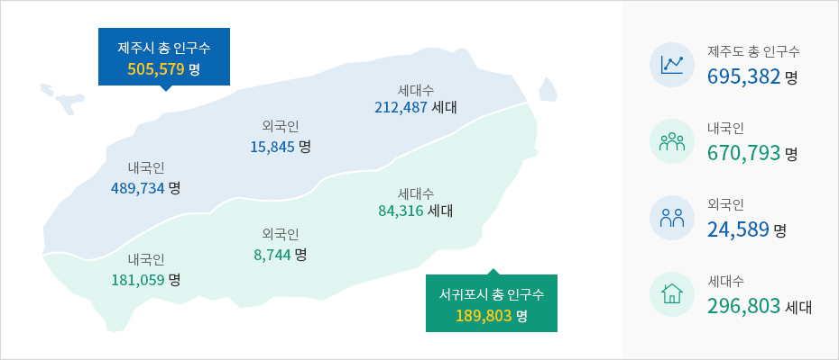

인구, 경제성장률, 산업구조
- Home
- 일반현황
- 행정·경제
- 인구, 경제성장률, 산업구조
인구
제주도 인구현황 (2020년 5월)



재정
- 2019년 : 5조 8,229억 원
- 재정자립도 : 32.9%
※ 출처·관련링크 : 제주특별자치도 (http://www.jeju.go.kr/jejuwnh/unesco/triple.htm)
산업
-
지역내 총 생산
18조227억원 -
1인당 GRDP
28,520 천원 (전국 33,657 천원) -
경제 성장률
4.9% -
FDI
3억불 -
관광 조수입
5조 5,718 억원 -
농업 조수입
1 조 6,945 억원 -
감귤
농가수 3 조 711 호 생산량 63만 1천 톤 -
수산업 조수입
생산량 18 만 7,739 M/T 조수입 1조 2,110억원 -
축산업
농가수4,918 호 사육두수 241만 6천마리
조수입 9,925억 원 -
수출액
182 만불 -
자동차 등록대수
59 만 6,215 대 (1세대당 1.32대) -
주택보급률
107 % (266,425호)
※ 출처·관련링크 : 제주특별자치도 (http://www.jeju.go.kr/jejuwnh/unesco/triple.htm)
기반시설
-
제주국제공항
-
수송실적(2019) : 29,455,305명
- 국내선 : 27,555,827명
- 국제선 : 1,899,478명
-
수송실적(2019) : 29,455,305명
-
제주항/국제크루즈터미널
-
수송실적(2019) : 1,345,802명
- 국내선 : 1,324,099명
- 국제선 : 21,703명
-
수송실적(2019) : 1,345,802명
-
교육기관 - 331개소
- 대학교 4 (국립대 1, 종합대 1, 전문대학교 2)
- 대학원 2
- 국제학교 4
- 고등학교 30
- 중학교 45
- 초등학교 113
- 유치원 123
- 분교장 7
- 특수학교 3
-
의료시설 - 926곳
- 종합병원 6
- 병원 8
- 요양병원 9
- 의원 439
- 치과 216
- 한의원 182
- 보건소 6
- 보건지소 11
- 보건진료소 47
- 건강생활지원센터 2
-
주택보급률 - 105.2%
- 가구수 24만 215가구
- 주택수 25만 2644호
-
자연휴양림 - 1개소
- 서귀포 치유의 숲
-
자연공원 - 7개소 361㎢
- 한라산국립공원
- 우도해양도립공원
- 추자해양도립공원
- 서귀포해양도립공원
- 마라해양도립공원
- 성산일출해양도립공원
- 제주곶자왈도립공원
-
자연휴양림 - 4개소
- 제주절물 자연휴양림
- 서귀포 자연휴양림
- 교래 자연휴양림
- 붉은오름 자연휴양림
-
관광인프라
- 골프장 30개소 33.6㎢
- 해수욕장 11개소
-
교육환경
- 국제학교 4개, 3천 9백여명 재학(2019)
- KIS Jeju
- NLCS Jeju
- BHA
- SJA JEJU
- 국제학교 4개, 3천 9백여명 재학(2019)